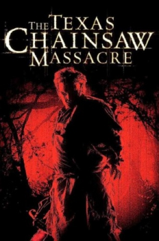

Country:United States, 98 minutes
Spoken languages:
Genres:Horror
Director(s):Marcus Nispel
Writer(s):Scott Kosar
Video Codec:Unknown
Number: 1236


Certification:R
Storyline:
After picking up a traumatized young hitchhiker, five friends find themselves stalked and hunted by a chainsaw-wielding killer and his family of equally psychopathic killers.
Cast:

Medium: Original DVD,
Loaned: No
Aspect ratio: Unknown